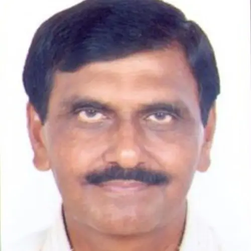

India member
Jayantilal N. Patel
Name: Jayantilal N. Patel Highest qualification and awarding university PhD, South Gujarat University, Surat, India Designation Professor (HAG) Employer Sardar Vallabhbhai National Institute of Technology, Surat, India Contact details: Email: WhatsApp number/Mobile number jnp@…
Published 5 July 2022 · Updated 7 April 2025

| Name: | Jayantilal N. Patel |
| Highest qualification and awarding university | PhD, South Gujarat University, Surat, India |
| Designation | Professor (HAG) |
| Employer | Sardar Vallabhbhai National Institute of Technology, Surat, India |
Contact details:
|
|
| jnp@ced.svnit.ac.in,jrgpk@yahoo.co.in | |
| +919924799422 | |
| Home page link on your employer web site if available | https://sites.google.com/view/jnpatel/home |
| Key areas of interest | Water resources planning and management, surface water and groundwater management, hydrology and irrigation water management using applications of advanced technologies like computational techniques, geospatial technologies, internet of things, water absorbent materials etc. |
| Web links for your research profile on Google scholar; ORCID or ResearchGate (if available); only one of them please. | Research Gate |
Jayantilal Patel is a professor (HAG) of water resources engineering having experience of 35 years in teaching, research and field works. His current research has a particular focus on: water resources management using advanced technologies; management of conjunctive use of surface water and groundwater; flood management; hydrology and irrigation engineering; water education and farm water management; and sustainable water planning for agriculture. He is passionate about understanding the aspects of water management for farmers and producing more crop per drop of water using transdisciplinary approach and advanced technologies. He has published more than 150 research papers and authored 03 books to his name, guided several Ph.D. thesis, completed many consultancy projects and led several externally funded research projects.
Research Project
- Application of GIS / GPS in Rainwater Harvesting and Management; Funding: Ministry of Human Resources Development, New Delhi, India
- Development of Urban Storm Water Management Model and Tansportation Planning; Funding: Space Application Centre, ISRO, Ahmedabad, India
- Securing Water for Agricultural and Food Sustainability: Developing Transdisciplinary Approach to Groundwater Management; Funding: Ministry of Human Resources Development, New Delhi, India (SPARC Project with Investigators from India, Australia and USA)
Key Publications/Reports
- Rana, Shilpesh C. and Patel Jayantilal N., 2020, Selection of Best Location for Small Hydro Power Project using AHP, WPM and TOPSIS Methods, ISH Journal of Hydraulic Engineering, 26(2):173-177.
- Varade, Smita and Patel Jayantilal N., 2018, Determination of Optimum Cropping Pattern Using Advanced Optimization Algorithms, ASCE’s Journal of Hydrologic Engineering, 23(6):1-9.
- Bhavsar, Pawan N., and Patel Jayantilal N., 2016, Development of Relationship Between Crop Coefficient and NDVI using Geospatial Technology, Journal of Agrometeorology, 18(2):261-264.
- Patel Jayantilal N. and Thorvat Akshay R., 2016, Synthetic Unit Hydrograph Development for Ungauged Basins Using Dimensional Analysis, Journal American Water Works Association, 108(3):E145-153.
Patel Jayantilal N., 2014, Modifications in Hydrological Cycle, Handbook of Engineering Hydrology, CRC Press, 3:247-259.